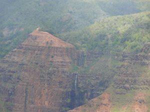

Auto Enhance, under the Colors menu of Photo Mud Editor, increases the contrast in the image
by automatically adjusting the range of intensity values. Unlike contrast, Auto Enhance retains
the original number of different intensity values. Ordinary contrast adjustments can lose values at
the high and low ends of the intensity scale.
If an image already has a wide range of color intensities, Auto Enhance will not have much
effect. If an image is very flat and hazy, Auto Enhance may actually enhance the color contrast
too much. If a photo has a lot of one color, such as a bird in the sky, the Auto Enhance function
may reduce the level of the dominant color too much.
